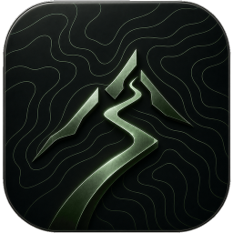
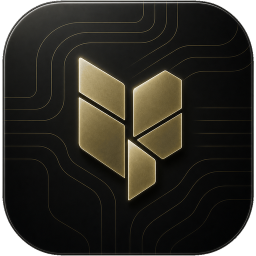
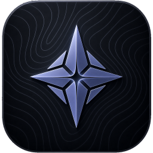
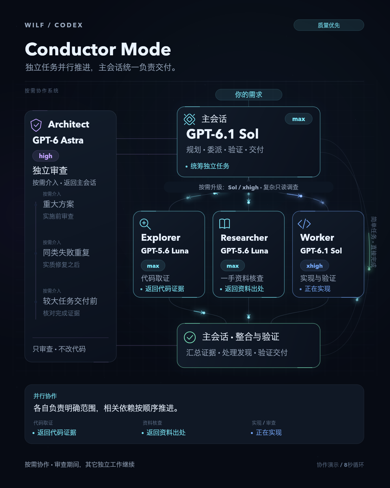

个人应用持续打磨中
Aevum.
把常用工具，
放在一起。
Aevum 是我用 AI 做的个人应用。训练、账本、日历和笔记都放在里面，一边用，一边改成自己顺手的样子。
看看这个项目PERSONAL TOOLSWEB / ANDROID
Aevum

Ultreia训练与赛事

Viatica账本与资产

Sidera日历与笔记
你好Hello
WILF WU / GUANGZHOU页面暂时未能完整载入，请重新加载。The page could not finish loading. Please reload.
比赛成绩、路上的照片，还有当时写下的赛记。
出发前的准备、路上的事，都记了一些。
正在载入文章…Loading articles…
内容准备好后会立即显示。Content will appear as soon as it is ready.
公路跑、越野跑，以及其他比赛。
正在载入比赛记录…Loading race records…
内容准备好后会立即显示。Content will appear as soon as it is ready.
把常用工具，
放在一起。
Aevum 是我用 AI 做的个人应用。训练、账本、日历和笔记都放在里面，一边用，一边改成自己顺手的样子。
看看这个项目


四个入口，放着日常里不同的事情。
协作方式 / CODEX
做项目时，我这样和 AI 配合。
主会话负责统筹，按任务需要调用不同角色。能独立完成的任务并行做，有依赖的步骤按顺序来。

OUT ON THE COURSE / RACE ARCHIVE
按赛事类型查看比赛记录和成绩。
正在载入比赛记录…Loading race records…
正在载入比赛记录…Loading race records…
内容准备好后会立即显示。Content will appear as soon as it is ready.